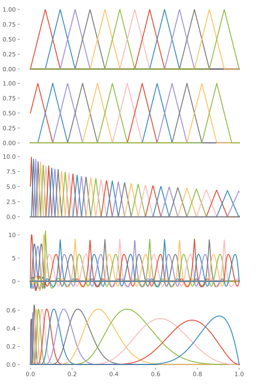

CompactBases.jl
CompactBases.jl is a package for various bases for function approximation with compact support in the framework of ContinuumArrays
Example usage
julia> a,b = 0.0,1.0 # Extents
(0.0, 1.0)
julia> N = 13 # Number of nodes
13
julia> k = 5 # Order of B-splines
5
julia> x = range(a, stop=b, length=1000)
0.0:0.001001001001001001:1.0
julia> Δx = (b-a)/(N+1) # Grid spacing
0.07142857142857142
julia> # Standard, uniform finite-differences
fd = FiniteDifferences(N, Δx)
Finite differences basis {Float64} on 0.0..1.0 with 13 points spaced by Δx = 0.07142857142857142
julia> # Staggered, uniform finite-differences
sfd_uni = StaggeredFiniteDifferences(N, Δx)
Staggered finite differences basis {Float64} on 0.0..0.9642857142857144 with 13 points spaced by ρ = 0.07142857142857142
julia> # Staggered, non-uniform finite-differences
sfd_nonuni = StaggeredFiniteDifferences(0.01, 0.5, 0.1, b)
Staggered finite differences basis {Float64} on 0.0..1.1112312795594823 with 39 points
julia> # Finite-element boundaries
tf = range(a, stop=b, length=N+2)
0.0:0.07142857142857142:1.0
julia> using LazyArrays, FillArrays
julia> # We can vary the polynomial order in each element
forder = Vcat(7, Fill(4,length(tf)-2))
14-element ApplyArray{Int64,1,typeof(vcat),Tuple{Int64,Fill{Int64,1,Tuple{Base.OneTo{Int64}}}}}:
7
4
4
4
4
4
4
4
4
4
4
4
4
4
julia> # By indexing the second dimension, we can implement Dirichlet0
# boundary conditions.
fem = FEDVR(tf, forder)[:,2:end-1]
FEDVR{Float64} basis with 14 elements on 0.0..1.0, restricted to elements 1:14, basis functions 2..45 ⊂ 1..46
julia> tb = ExpKnotSet(k, -2.0, log10(b), N+1)
23-element ExpKnotSet{5,5,5,Float64,StepRangeLen{Float64,Base.TwicePrecision{Float64},Base.TwicePrecision{Float64}},Array{Float64,1}}:
0.0
0.0
0.0
0.0
0.0
0.01
0.014251026703029978
0.020309176209047358
0.028942661247167503
0.04124626382901352
0.05878016072274912
0.0837677640068292
0.11937766417144363
0.17012542798525887
0.24244620170823283
0.3455107294592219
0.4923882631706739
0.7017038286703828
1.0
1.0
1.0
1.0
1.0
julia> splines = BSpline(tb)[:,2:end-1]
BSpline{Float64} basis with ExpKnotSet(Float64) of on order k = 5 (quartic) on 0,0.01..1.0 (14 intervals), restricted to basis functions 2..17 ⊂ 1..18
Reference
Base.MatrixCompactBases.AbstractKnotSetCompactBases.ArbitraryKnotSetCompactBases.ArbitraryKnotSetCompactBases.BSplineCompactBases.BSplineCompactBases.BSplineCompactBases.DensityCompactBases.DiagonalOperatorCompactBases.DiagonalOperatorCompactBases.ExpKnotSetCompactBases.ExpKnotSetCompactBases.FunctionProductCompactBases.FunctionProductCompactBases.FunctionProductCompactBases.FunctionProductCompactBases.LinearKnotSetCompactBases.LinearKnotSetCompactBases.LinearOperatorCompactBases.LinearOperatorCompactBases.ShiftAndInvertCompactBases.ShiftAndInvertCompactBases.ShiftAndInvertCompactBases.ShiftAndInvertCompactBases.StaggeredFiniteDifferencesCompactBases.UnitVectorBase.copyto!Base.copyto!Base.copyto!Base.copyto!Base.firstBase.firstBase.getindexBase.getindexBase.lastBase.lastBase.lengthBase.lengthCompactBases.assert_multiplicitiesCompactBases.assert_multiplicitiesCompactBases.centersCompactBases.change_interval!CompactBases.deBoorCompactBases.find_intervalCompactBases.find_intervalCompactBases.findelementCompactBases.lagrangeder!CompactBases.leftmultiplicityCompactBases.leftmultiplicityCompactBases.lgwtCompactBases.lgwtCompactBases.local_stepCompactBases.metricCompactBases.metric_shapeCompactBases.nonempty_intervalsCompactBases.nonempty_intervalsCompactBases.num_quadrature_pointsCompactBases.num_quadrature_pointsCompactBases.numfunctionsCompactBases.numfunctionsCompactBases.numintervalsCompactBases.numintervalsCompactBases.orderCompactBases.orderCompactBases.rightmultiplicityCompactBases.rightmultiplicityCompactBases.within_intervalCompactBases.within_intervalCompactBases.within_supportCompactBases.within_supportLinearAlgebra.mul!CompactBases.@materialize
CompactBases.FunctionProduct — MethodFunctionProduct{Conjugated}(L, R[, T; w=one]) where {Conjugated,T}Construct a FunctionProduct for computing the product of two functions expanded over L and R, respectively:
where $w(x)$ is an optional weight function, over the basis of $g(x)$, via Vandermonde interpolation.
CompactBases.LinearOperator — TypeLinearOperator(A, B⁻¹, temp)A helper object used to apply the action of a linear operator, whose matrix representation is given by A, in the basis whose metric inverse is B⁻¹. For orthogonal bases (such as e.g. FiniteDifferences and FEDVR), only multiplication by A is necessary, but non-orthonal bases (such as BSpline) necessitates the application of the metric inverse as well.
CompactBases.LinearOperator — MethodLinearOperator(A, R)Construct the linear operator whose matrix representation in the basis R is A, automatically deducing if application of the metric inverse is also necessary.
CompactBases.ShiftAndInvert — TypeShiftAndInvert(A⁻¹, B, temp)Represents a shifted-and-inverted operator, suitable for Krylov iterations when targetting an interior point of the eigenspectrum. A⁻¹ is a factorization of the shifted operator and B is the metric matrix.
CompactBases.ShiftAndInvert — TypeShiftAndInvert(A, B[, σ=0])Construct the shifted-and-inverted operator corresponding to the eigenproblem $(\mat{A}-σ\mat{B})\vec{x} = \lambda\mat{B}\vec{x}$.
CompactBases.ShiftAndInvert — TypeShiftAndInvert(A, ::UniformScaling[, σ=0])Construct the shifted-and-inverted operator corresponding to the eigenproblem $(\mat{A}-σ\mat{I})\vec{x} = \lambda\vec{x}$.
CompactBases.ShiftAndInvert — TypeShiftAndInvert(A, R[, σ=0])Construct the shifted-and-inverted operator corresponding to the eigenproblem $(\mat{A}-σ\mat{B})\vec{x} = \lambda\mat{B}\vec{x}$, where $\mat{B}$ is the suitable operator metric, depending on the AbstractQuasiMatrix R employed.
CompactBases.StaggeredFiniteDifferences — TypeStaggeredFiniteDifferencesStaggered finite differences with variationally derived three-points stencils for the case where there is Dirichlet0 boundary condition at r = 0. Supports non-uniform grids, c.f.
- Krause, J. L., & Schafer, K. J. (1999). Control of THz Emission from Stark Wave Packets. The Journal of Physical Chemistry A, 103(49), 10118–10125. http://dx.doi.org/10.1021/jp992144
CompactBases.centers — Methodcenters(B)Return the locations of the mass centers of all basis functions of B; for orthogonal bases such as finite-differences and FE-DVR, this is simply locs, i.e. the location of the quadrature nodes.
CompactBases.metric — Methodmetric(B)Returns the metric or mass matrix of the basis B, equivalent to S=B'B.
CompactBases.metric_shape — Methodmetric_shape(B)Returns the shape of the metric or mass matrix of the basis B, i.e. Diagonal, BandedMatrix, etc.
CompactBases.nonempty_intervals — Methodnonempty_intervals(t)Return the indices of all intervals of the knot set t that are non-empty.
Examples
julia> nonempty_intervals(ArbitraryKnotSet(3, [0.0, 1, 1, 3, 4, 6], 1, 3))
4-element Array{Int64,1}:
1
3
4
5CompactBases.numfunctions — Methodnumfunctions(t)Returns the number of basis functions generated by knot set t.
Examples
julia> numfunctions(LinearKnotSet(3, 0, 1, 2))
4
julia> numfunctions(LinearKnotSet(5, 0, 1, 2))
6CompactBases.numintervals — Methodnuminterval(t)Returns the number of intervals generated by the knot set t.
Examples
julia> numintervals(LinearKnotSet(3, 0, 1, 2))
2CompactBases.order — Methodorder(t)Returns the order k of the knot set t.
CompactBases.UnitVector — TypeUnitVector{T}(N, k)Helper vector type of length N where the kth element is one(T) and all the others zero(T).
Base.copyto! — Methodcopyto!(ρ::FunctionProduct{Conjugated}, f::AbstractVector, g::AbstractVector) where ConjugatedUpdate the FunctionProduct ρ from the vectors of expansion coefficients, f and g.
Base.first — Methodfirst(t)Return the first knot of t.
Base.getindex — Methodgetindex(t, i)Return the ith knot of the knot set t, accounting for the multiplicities of the endpoints.
Examples
julia> LinearKnotSet(3, 0, 1, 3)[2]
0.0
julia> LinearKnotSet(3, 0, 1, 3, 1, 1)[2]
0.3333333333333333Base.last — Methodlast(t)Return the last knot of t.
Base.length — Methodlength(t)Return the number of knots of t.
Examples
julia> length(LinearKnotSet(3, 0, 1, 3))
8
julia> length(LinearKnotSet(3, 0, 1, 3, 1, 1))
4CompactBases.assert_multiplicities — Methodassert_multiplicities(k,ml,mr,t)Assert that the multiplicities at the endpoints, ml and mr, respectively, are consistent with the order k. Also check that the amount of knots in the knot set t are enough to support the requested order k.
CompactBases.change_interval! — Methodchange_interval!(xs, ws, x, w[, a=0, b=1, γ=1])Transform the Gaußian quadrature roots x and weights w on the elementary interval [-1,1] to the interval [γ*a,γ*b] and store the result in xs and ws, respectively. γ is an optional root of unity, used to complex-rotate the roots (but not the weights).
CompactBases.deBoor — MethoddeBoor(t, c, x[, i[, m=0]])Evaluate the spline given by the knot set t and the set of control points c at x using de Boor's algorithm. i is the index of the knot interval containing x. If m≠0, calculate the mth derivative at x instead.
CompactBases.find_interval — Methodfind_interval(t, x[, i=ml])Find the interval in the knot set t that includes x, starting from interval i (which by default is the first non-zero interval of the knot set). The search complexity is linear, but by storing the result and using it as starting point for the next call to find_interval, the knot set need only be traversed once.
CompactBases.findelement — Functionfindelement(B::FEDVR, k[, i=1, m=k])
Find the finite-element of B that contains the kth basis function, optionally starting the search from element i and basis function m of that element.
CompactBases.lagrangeder! — Methodlagrangeder!(xⁱ, m, L′)Calculate the derivative of the Lagrange interpolating polynomial Lⁱₘ(x), given the roots xⁱ, at the roots, and storing the result in L′.
∂ₓ Lⁱₘ(xⁱₘ,) = (xⁱₘ-xⁱₘ,)⁻¹ ∏(k≠m,m′) (xⁱₘ,-xⁱₖ)/(xⁱₘ-xⁱₖ), m≠m′, [δ(m,n) - δ(m,1)]/2wⁱₘ, m=m′
Eq. (20) Rescigno2000
CompactBases.leftmultiplicity — Methodleftmultiplicity(t)Return the multiplicity of the left endpoint.
CompactBases.lgwt — Methodlgwt(t, N) -> (x,w)Generate the N Gauß–Legendre quadrature roots x and associated weights w, with respect to the B-spline basis generated by the knot set t.
Examples
julia> CompactBases.lgwt(LinearKnotSet(2, 0, 1, 3), 2)
([0.0704416, 0.262892, 0.403775, 0.596225, 0.737108, 0.929558], [0.166667, 0.166667, 0.166667, 0.166667, 0.166667, 0.166667])
julia> CompactBases.lgwt(ExpKnotSet(2, -4, 2, 7), 2)
([2.11325e-5, 7.88675e-5, 0.000290192, 0.000809808, 0.00290192, 0.00809808, 0.0290192, 0.0809808, 0.290192, 0.809808, 2.90192, 8.09808, 29.0192, 80.9808], [5.0e-5, 5.0e-5, 0.00045, 0.00045, 0.0045, 0.0045, 0.045, 0.045, 0.45, 0.45, 4.5, 4.5, 45.0, 45.0])CompactBases.local_step — Methodlocal_step(B, i)The step size around grid point i. For uniform grids, this is equivalent to step.
CompactBases.num_quadrature_points — Methodnum_quadrature_points(k, k′)The number of quadrature points needed to exactly compute the matrix elements of an operator of polynomial order k′ with respect to a basis of order k.
CompactBases.rightmultiplicity — Methodrightmultiplicity(t)Return the multiplicity of the right endpoint.
CompactBases.within_interval — Methodwithin_interval(x, interval)Return the indices of the elements of x that lie within the given interval.
CompactBases.within_support — Methodwithin_support(x, t, j)Return the indices of the elements of x that lie withing the compact support of the jth basis function (enumerated 1..n), given the knot set t. For each index of x that is covered, the index k of the interval within which x[i] falls is also returned.
CompactBases.@materialize — Macro@materialize function op(args...)This macro simplifies the setup of a few functions necessary for the materialization of Applied objects:
ApplyStyle, used to ensure dispatch of the applied object to the routines belowcopyto!(dest::DestType, applied_obj::Applied{...,op})performs the actual materialization ofapplied_objinto the destination object which has been generated bysimilarwhich usually returns a suitable matrixmaterializewhich makes use of the above functions
Example
@materialize function *(Ac::MyAdjointBasis,
O::MyOperator,
B::MyBasis)
MyApplyStyle # An instance of this type will be returned by ApplyStyle
T -> begin # generates similar
A = parent(Ac)
parent(A) == parent(B) ||
throw(ArgumentError("Incompatible bases"))
# There may be different matrices best representing different
# situations:
if ...
Diagonal(Vector{T}(undef, size(B,1)))
else
Tridiagonal(Vector{T}(undef, size(B,1)-1),
Vector{T}(undef, size(B,1)),
Vector{T}(undef, size(B,1)-1))
end
end
dest::Diagonal{T} -> begin # generate copyto!(dest::Diagonal{T}, ...) where T
dest.diag .= 1
end
dest::Tridiagonal{T} -> begin # generate copyto!(dest::Tridiagonal{T}, ...) where T
dest.dl .= -2
dest.ev .= 1
dest.du .= 3
end
end